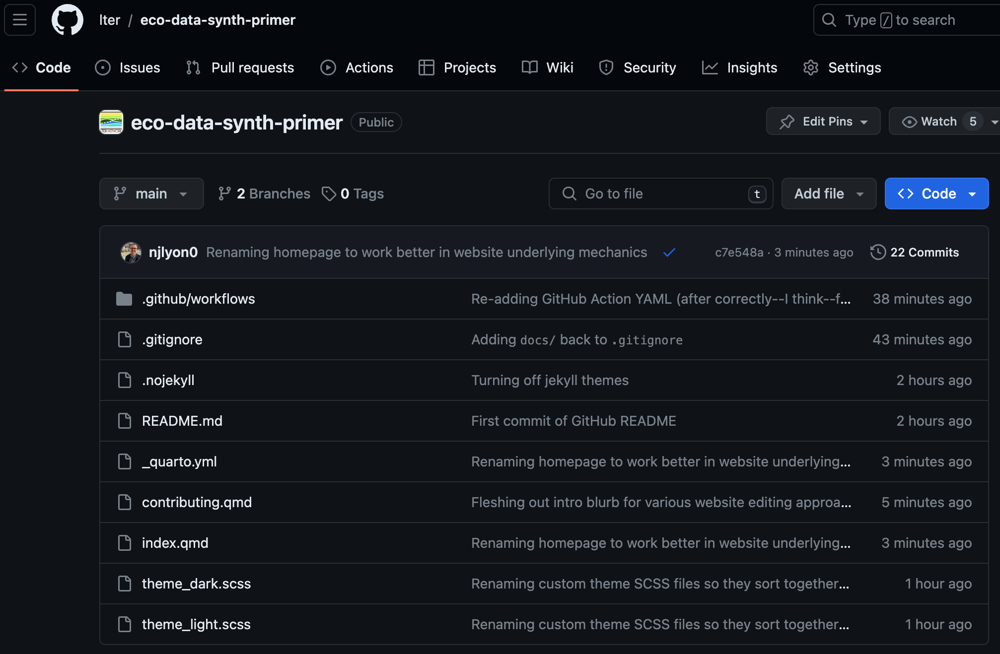
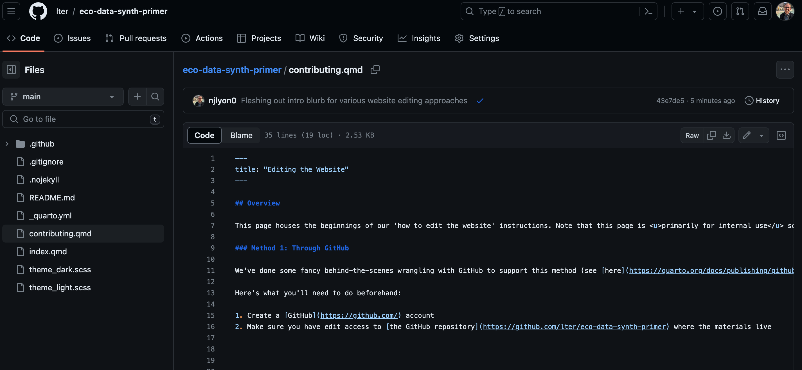
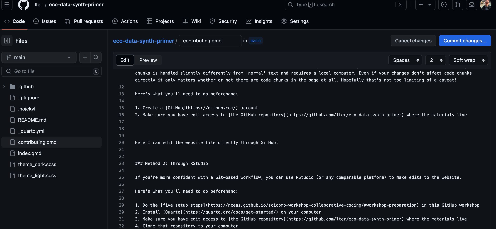
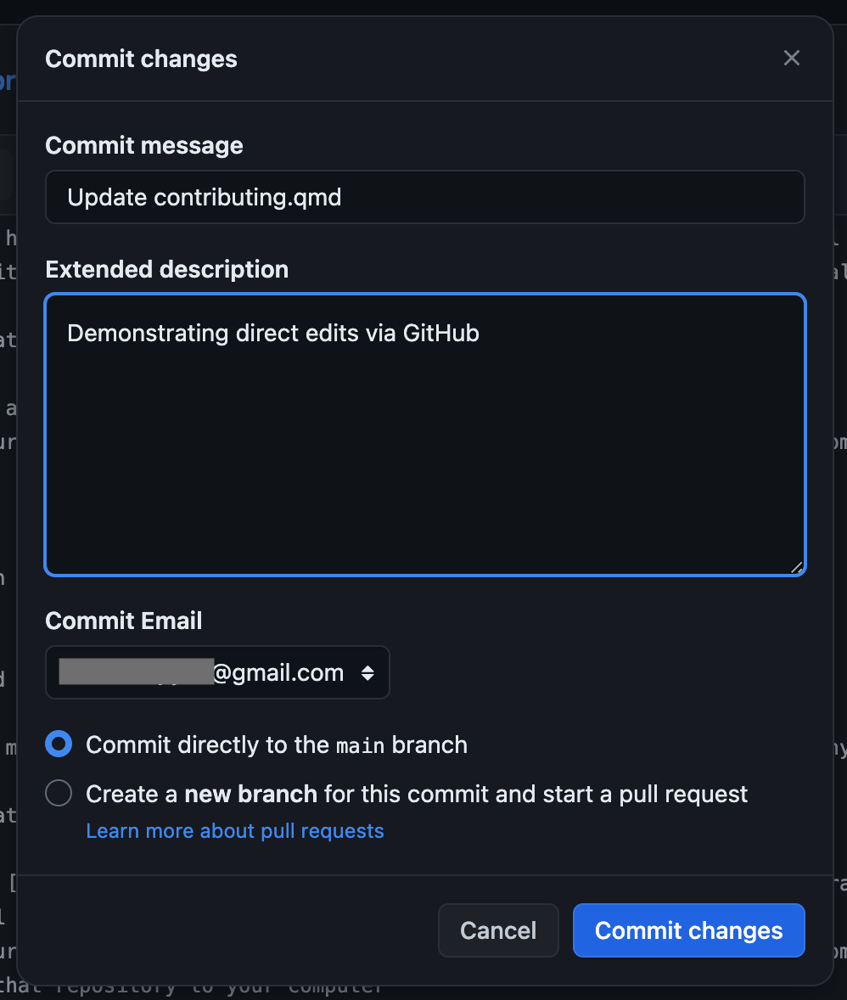
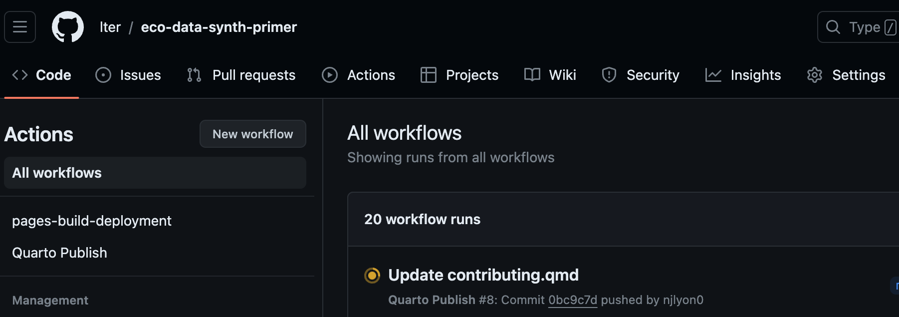
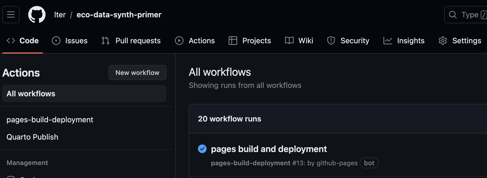
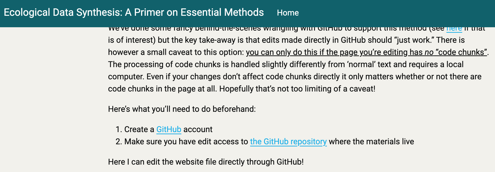

Editing the Website
Overview
This page houses the beginnings of our ‘how to edit the website’ instructions. Note that this page is primarily for internal use so it assumes you already are a member of the group and have the necessary access to the source GitHub repository. There are a few viable options for contributing to this website. Choose the method that aligns best with your skills and/or the one that sparks the most joy for you.
Cautionary Conflicts Note
GitHub makes a lot of the technical aspects of collaborating much simpler but there is one thing to watch out for: conflicts. Essentially, GitHub is not Google Docs. This means that while we can edit this website collaboratively we cannot do so simultaneously. When multiple people edit the same file in different ways, GitHub doesn’t know which set of changes should take priority (and it is often the case that we want both sets of edits!) and so it returns a conflict message that essentially says ‘you figure it out human’.
Fortunately the way to avoid conflicts is straightforward: communicate with one another! Before making any edits to the files in this website, reach out to the rest of the group and let them know! This can be as simple as “hey, I’ll be working on topic X from 10-11 ET so please don’t edit anything in the meantime.” For those of you working in GitHub directly you don’t really need to worry too much about this because your edits will always take priority but it’s good to think about so you don’t set the stage for others to encounter conflicts.
Method 1: Through GitHub
We’ve done some fancy behind-the-scenes wrangling with GitHub to support this method (see here if that is of interest) but the key take-away is that edits made directly in GitHub should “just work.” There is however a small caveat to this option: you can only do this if the page you’re editing has no “code chunks”. The processing of code chunks is handled slightly differently from ‘normal’ text and requires a local computer. Even if your changes don’t affect code chunks directly it only matters whether or not there are code chunks in the page at all. Hopefully that’s not too limiting of a caveat!
Here’s what you’ll need to do beforehand:
- Create a GitHub account
- Make sure you have edit access to the GitHub repository where the materials live
Once you’ve done that you can follow these steps to directly affect the website via GitHub! To start, go to the course’s GitHub repository and click the file for the page you want to edit. You can deduce that because the URL of that page will exactly match the file name. For example, let’s imagine that we want to edit the contributing page lter.github.io/eco-data-synth-primer/contributing.html. The file that controls this page is contributing.qmd which you can be sure of because it shares everything but the file extension with the link.

Once you’re there, click the name of the file you want to edit (for the demonstration purposes we’ll click contributing.qmd). On the resulting page, you’ll want to click the small pencil icon just above and to the right of the website content (see beneath the word “History” in the screenshot below).

Now you can make any edits you’d like! Don’t worry about writing one super long line because when the website “renders” (i.e., builds itself) the text will be automatically wrapped to the width of the screen. In the screenshot below I’ve added “Here I can edit the website file directly through GitHub” on line 20.

Once you’re happy with your edits and want them to be sent to the “real” website, you’ll need to “commit” those changes. Click the bright blue–or green depending on your GitHub settings–button in the top right. In the small pop-up window that results, type a short description of what purpose your edits serve. This message is important because these comments will create the timeline that we can use to see or return to previous versions of the course materials.

Now you’ll find yourself back in the ‘viewing’ part of GitHub and you should see your edits in the file. However, your edits are not yet in the live website. The site must first render your changes. This rendering effort is essentially the computer parsing your edits to a Quarto document (i.e., a .qmd file) into the HTML format needed for the website.
You can check the status of this rendering by clicking the “Actions” tab of the repository. You’ll see an orange–or red, again depending on your GitHub settings–circle with a progress wheel. After a few minutes that should turn into a blue–or green–check mark. You may notice that the name of the Action exactly matches the text you put in the top field of the commit message pop-up window earlier.

Once that Action finishes you’ll see a much faster one called “pages build and deployment” show up and go through the same process. This action is tying together the new website (all the unchanged files plus whatever files were changed by your edits) and updating the living website with that content.

Once both of those Actions have finished you should be able to visit the website link and see your edits in the live version! Note that you may need to refresh your browser page to update your cache so if you don’t immediately see your edits you may want to wait a moment and refresh the page.

Method 2: Through RStudio
If you’re more confident with a Git-based workflow, you can use RStudio (or any comparable platform) to make edits to the website.
Here’s what you’ll need to do beforehand:
- Do the five setup steps in this GitHub workshop
- Install Quarto on your computer
- Make sure you have edit access to the GitHub repository where the materials live
- Clone that repository to your computer
Editing a Quarto website is fairly straightforward once you’ve handled the prepartory steps outlined above. You’ll begin by editing your chosen files and–periodically–committing those changes.
The .gitignore should be set up in such a way that you cannot commit files you “shouldn’t” be committing but the rule of thumb is that you should feel free to commit either (A) changes to files ending in .qmd or (B) anything in the _freeze/ directory. The _freeze/ directory is how Quarto stores files that need some amount of computing so that it doesn’t waste computing resources re-rendering those files all the time and instead only re-renders when needed. Note that only files with one or more code chunks will ever put anything in that folder.
Our GitHub Actions (see the ‘Method 1’ tutorial) are set up in such a way that once you push your commits the website should re-build itself automatically. Just wait for the GitHub Actions to complete and/or refresh your browser after pushing and you should see your edits reflected in the website.
While editing you may find the quarto preview command line call helpful as it will create a new tab in your browser that will dynamically show any edits you make. This is really nice particularly for writing or debugging a code chunk as you’ll be able to see the outputs in real time without waiting for the site to render only to find out your code doesn’t work as intended.
Method 3: Through Others
If you’d prefer, you can write the text that you’d like to include in the text editing software (e.g, Microsoft Word, Google Docs, etc.) of your choice. Once you’ve written it there, send it to someone else on the team who can use one of the preceding methods to get that content integrated. Ideally, hosting through GitHub (and creating this document) empowers you to make edits on your own behalf but if that feels out of reach in this moment we absolutely still want your insight so please don’t hesitate to go this direction if necessary.